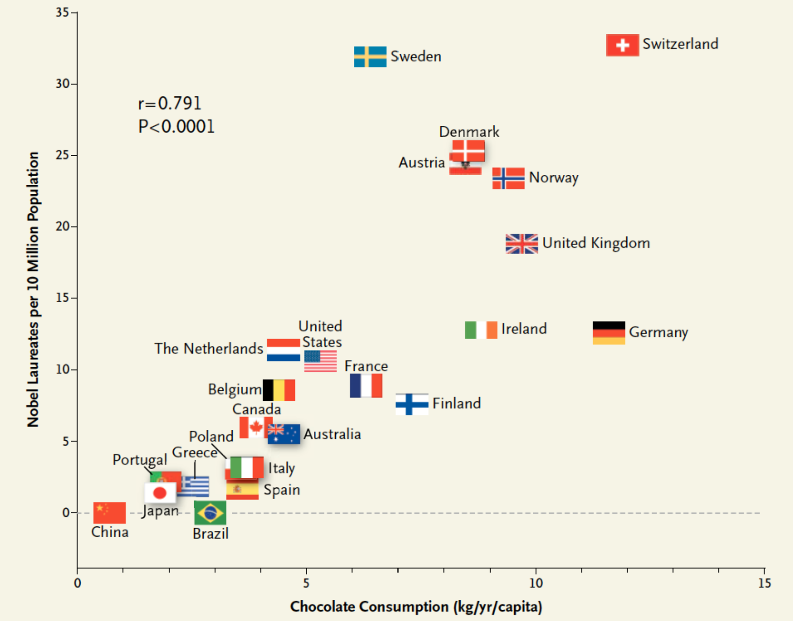
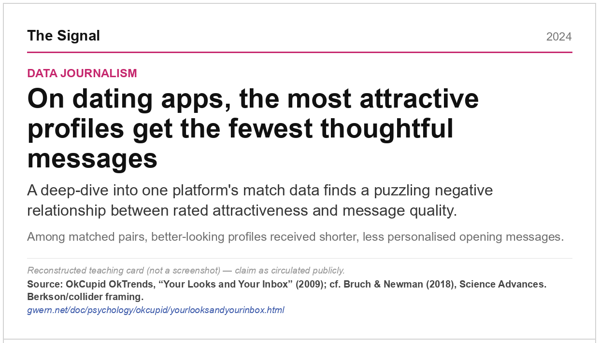
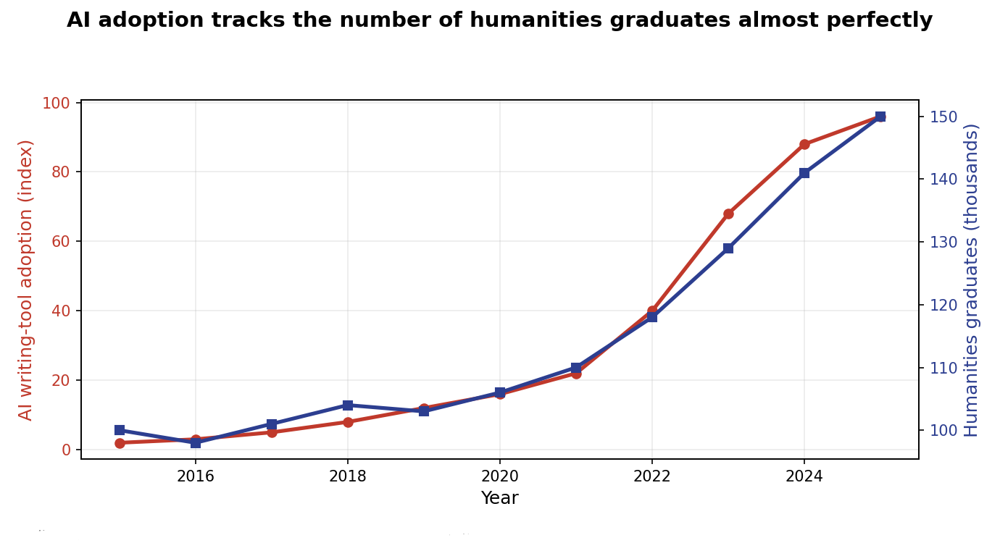
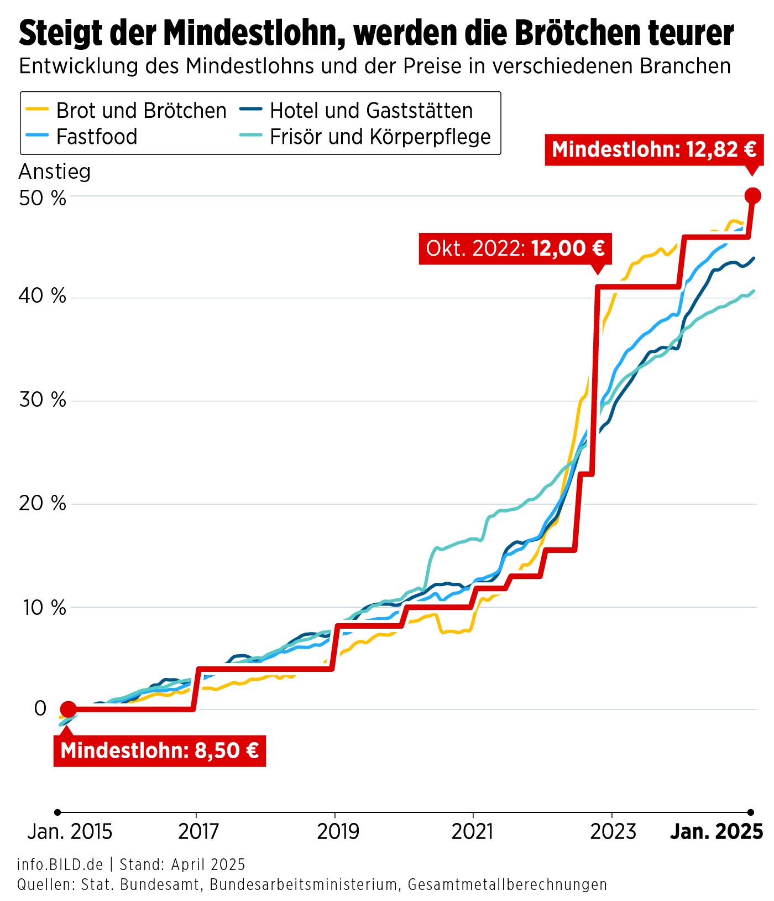
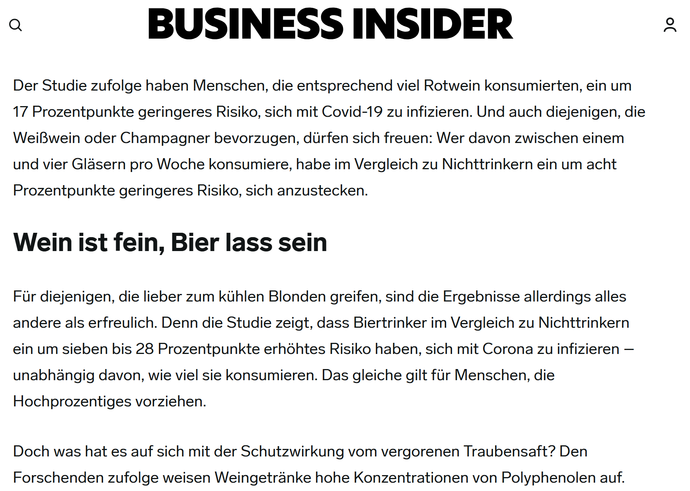
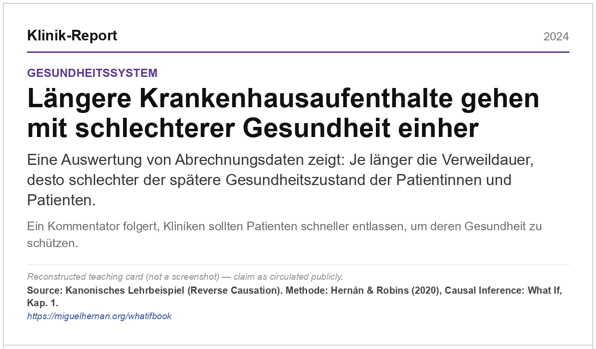
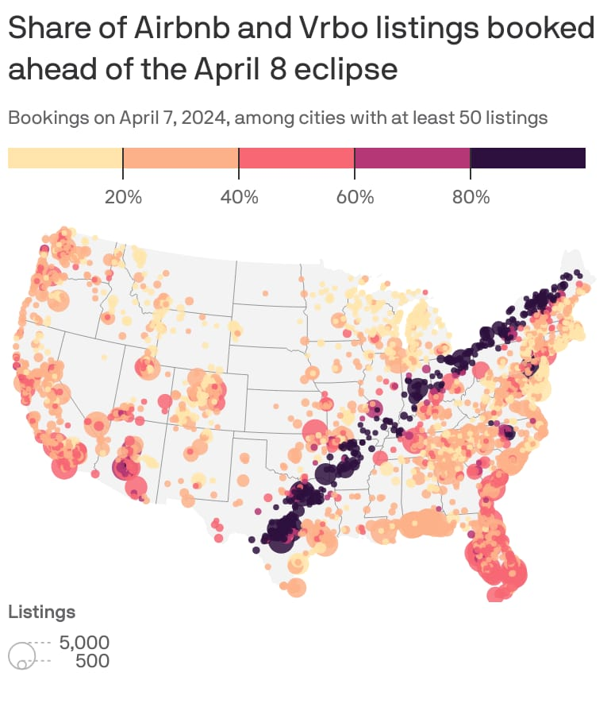
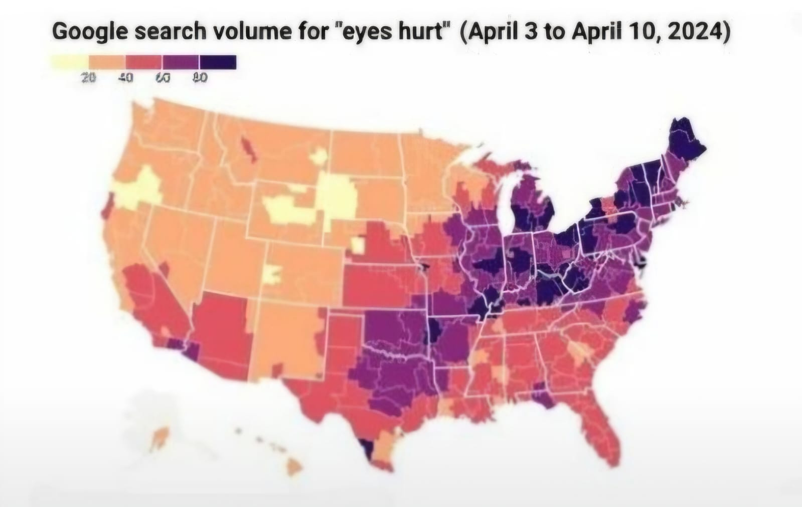
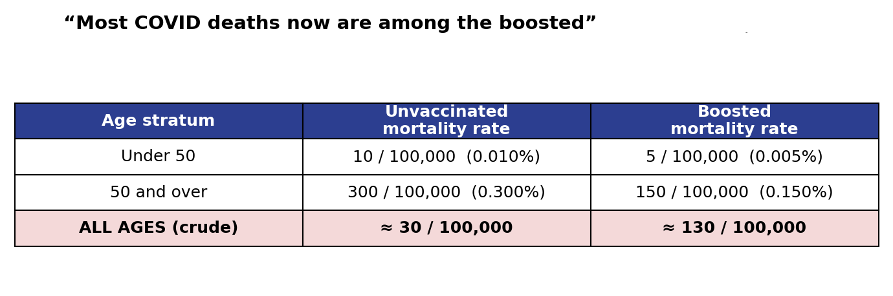

flowchart LR A["19.08.<br/>Auftakt & Setup"] --> B["20.08.<br/>ML & Kausalinferenz"] B --> C["21.–22.08.<br/>Projekt-Sprint"] C --> D["24.–25.08.<br/>Gruppenpräsentationen"] D --> E["26.08.<br/>Synthese & Feedback"]
Künstliche Intelligenz und das „Warum“
Sommerakademie Leysin 2026 · Studienstiftung des deutschen Volkes
Schön, dass du dabei bist 🙂
Die nächsten 8 Tage arbeiten wir in dieser Arbeitsgruppe an der Schnittstelle von Maschinellen Lernen, Statistik und Kausaler Inferenz.
Wir untersuchen nicht nur, welche Korrelationen Daten enthalten, sondern wann diese Muster etwas über Ursache und Wirkung aussagen.
Wir werden zunächst zusammen die Grundlagen erarbeiten und dann in Gruppenprojekten vertiefen.
| Programmpunkt | Format | Frage |
|---|---|---|
| 1 | Ankommen & Orientierung | Wer sind wir, was ist diese AG? |
| 2 | Vorstellungsrunde | Welche Erfahrungen und Erwartungen sind im Raum? |
| 3 | Motivationsbeispiele | Wann täuscht Korrelation? |
| 4 | Gruppenarbeit & Projekte | Wie arbeiten wir in den nächsten Tagen? |
Die AG behandelt die Grundlagen der kausalen Inferenz (mit ML)
Wir wollen methodische Skills vermitteln, die in Studium, Beruf und Forschung hilfreich sein werden, z.B.,
Uns geht es nicht um eine Referatsreihe. Die Gruppenarbeiten sind ein Labor. Es geht darum mit Daten und Methodiken zu arbeiten und dabei zu lernen!
Die abschließenden Präsentationen sind keine Prüfungen! Sie sind Anregungspunkt für Diskussionen.
Wir wollen euch kennenlernen, z.B.,
Bist du schonmal auf einen Trugschluss durch Korrelationen gestoßen?
Stellt euch gemäß eurer Position im Raum auf.
| Linkes Ende | Rechtes Ende |
|---|---|
| stimme gar nicht zu | stimme voll zu |
Aussagen:
Länder mit höherem Schokoladenkonsum haben mehr Nobelpreisträger:innen pro Kopf.
Mögliche Diagnose: Confounding. Wohlstand, Bildungs- und Forschungsinfrastruktur erhöhen plausibel sowohl den Schokoladenkonsum als auch die Chance auf wissenschaftliche Spitzenleistungen.

Auf einer Dating-Plattform erhalten sehr attraktive Profile kürzere, weniger persönliche Nachrichten.
Mögliche Diagnose: Selektions- bzw. Colliderbias. Wer nur Menschen auf Datingapps betrachtet, konditioniert auf einen Auswahlprozess. Diese Teilmenge liefert nicht zwangsläufig valide Schlüsse auf die Population.

Die weltweite Verbreitung von KI und die Zahl der Geisteswissenschaftsabschlüsse verlaufen fast parallel.
Mögliche Diagnose: Scheinkorrelation. Eine gemeinsame Zeitachse kann sehr unterschiedliche Größen gleichzeitig verändern. Ohne plausiblen Wirkmechanismus und Vergleichsdesign ist die fast perfekte Korrelation keine Evidenz für einen Effekt.

Nach einer Mindestlohnerhöhung steigen auch die Preise für Brot und Brötchen.
Mögliche Diagnose: gemeinsame Trends und Rückkopplung. Lebenshaltungskosten, Branchenkosten und politische Reaktionen können Löhne und Preise zugleich bewegen. Ein glaubwürdiger Vergleich könnte etwa ein Difference-in-Differences-Design nutzen.

In Beobachtungsdaten scheint regelmäßiger Weinkonsum mit einem niedrigeren COVID-Risiko einherzugehen.
Mögliche Diagnose: Confounding. Alter, Einkommen, Gesundheit, Zugang zu Versorgung und Kontaktverhalten können sowohl den Konsum von Wein als auch das Erkrankungsrisiko beeinflussen.

Patient:innen mit langen Krankenhausaufenthalten haben später im Mittel einen schlechteren Gesundheitszustand.
Mögliche Diagnose: umgekehrte Kausalität. Häufig macht nicht der Aufenthalt krank; ein schwerer Ausgangszustand führt zugleich zu längerer Verweildauer und schlechterer späterer Gesundheit.

Regionen mit vielen ausgebuchten Airbnbs verzeichnen zugleich auffällig viele Suchanfragen nach „Augenschmerzen“.
Mögliche Diagnose: gemeinsame Ursache. Die Sonnenfinsternis vom 8. April 2024 brachte Reisende auf ihren Verlauf und führte zugleich zu mehr Suchanfragen nach Beschwerden rund um das Beobachten der Finsternis.


In den Gesamtdaten ist die Sterblichkeit unter den geboosterten Patient:innen höher.
Mögliche Diagnose: Simpsons Paradox. Wenn Geboosterte im Schnitt deutlich älter sind, dominieren sie in den Rohdaten. Innerhalb jeder Altersgruppe kann die Sterblichkeit dennoch niedriger sein; erst die Altersstandardisierung macht den Vergleich sinnvoll.

Kausale Frage
Was würde eine Intervention bewirken?
Counterfactual
Was wäre sonst geschehen?
Design & Annahmen
Warum ist der Vergleich glaubwürdig?
Schätzung
Welche Zahl folgt aus den Daten?
Interpretation
Was zeigt sie — und was nicht?
Ein (ML-)Modell kann eine Zahl ausgeben. Eine kausale Analyse muss zusätzlich begründen, warum diese Zahl als kausaler Effekt interpretiert werden darf.
flowchart LR A["19.08.<br/>Auftakt & Setup"] --> B["20.08.<br/>ML & Kausalinferenz"] B --> C["21.–22.08.<br/>Projekt-Sprint"] C --> D["24.–25.08.<br/>Gruppenpräsentationen"] D --> E["26.08.<br/>Synthese & Feedback"]
| Thema | Kernfrage |
|---|---|
| 🏥 Randomisierte Experimente / Medizin | Was leistet ein RCT? |
| 🔍 Explainable ML / AI | Warum sind Modell-Erklärungen nicht automatisch kausal? |
| 💬 Causality and LLMs | Können Sprachmodelle kausal schlussfolgern oder beim Forschen helfen? |
| 🕸️ DAGs / Causal Discovery | Welche Strukturannahmen lassen sich begründen oder aus Daten eingrenzen? |
| Thema | Kernfrage |
|---|---|
| 🎯 Causal Inference with ML | Für wen wirkt eine Maßnahme — und wie hilft ML? |
| 📐 Tools: RDD / DiD | Was lernen wir aus Cutoffs, und parallelen Trends? |
| 🎲 Bayesian Methods | Wie werden Vorwissen und Unsicherheit transparent modelliert? |
Die Website liefert zu jedem Thema einen Einstieg, eine Demo und offene Fragen. Das Projekt beginnt nicht mit einer fertigen Antwort, sondern mit einer guten Entscheidung darüber, was ihr zeigen wollt.
Wählt nicht nur nach dem interessantesten Schlagwort.
| Prüffrage | Gute Antwort |
|---|---|
| Neugier | Wir wollen diese Frage wirklich verstehen. |
| Lernziel | Das Thema ergänzt unser Vorwissen sinnvoll. |
| Machbarkeit | In wenigen Tagen können wir ein klares Lernartefakt bauen. |
| Beitrag | Die Gruppe kann anderen eine Annahme, Methode oder Grenze verständlich machen. |
Am Ende entwickelt jede Gruppe eine wissenschaftlich fundierte Mini-Station.
Eine gute App macht nicht nur Ergebnisse sichtbar. Sie macht ein wissenschaftliches Argument erfahrbar.
Nicht:
„Hier sind viele Plots und Kennzahlen.“
Sondern:
„Wenn diese Annahme verletzt ist, kippt die Interpretation.“
„Wenn wir für diese Variable adjustieren, ändert sich der Estimand.“
„Wenn wir Vorhersage mit Wirkung verwechseln, treffen wir eine andere Entscheidung.“
Die wichtigste Leistung eines Projekts ist nicht die größte technische Komplexität, sondern eine fundierte (kausale) Analyse.
Ein Fehler in einem Projekt legt nicht die gesamte Website lahm. Ausprobieren ist ausdrücklich Teil der Arbeitsgruppe.
Wählt eine Karte oder bringt eine eigene Frage ein:
Ziel: Nicht sofort die richtige Methode nennen. Zuerst die Frage so präzise formulieren, dass eine Methode überhaupt beurteilt werden kann.
| Baustein | Leitfrage |
|---|---|
| Einheit | Wer oder was wird betrachtet? |
| Treatment | Welche Intervention oder Variation interessiert uns? |
| Outcome | Was soll sich verändern? |
| Counterfactual | Was wäre ohne Treatment geschehen? |
| Naiver Vergleich | Welche Auswertung läge zunächst nahe? |
| Gefahr | Warum könnte dieser Vergleich irreführend sein? |
| Nächster Schritt | Experiment, DAG, RDD, DiD, ML, Bayes oder Sensitivität? |
Bewahrt eure Canvas auf. Sie kann der Ausgangspunkt für eine Themenpräferenz oder ein eigenes Projekt werden.
Einführung in Machine Learning
Was kann ein Modell aus Daten lernen?
Einführung in Kausale Inferenz
Was müssen wir zusätzlich wissen oder annehmen, um aus Daten über Interventionen zu lernen?
Die Leitfrage für morgen:
Was wäre passiert, wenn wir anders gehandelt hätten?
Künstliche Intelligenz und das Warum · Arbeitsgruppenauftakt